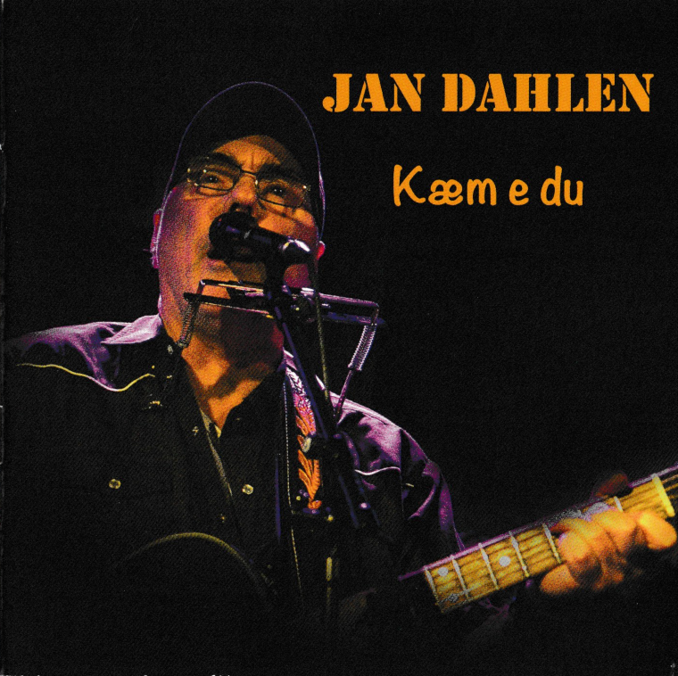
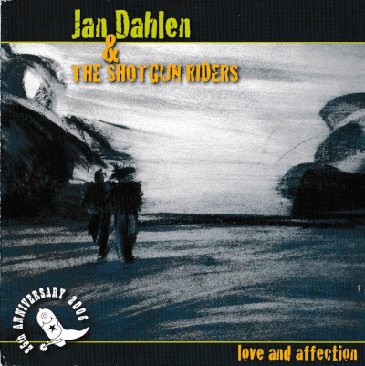
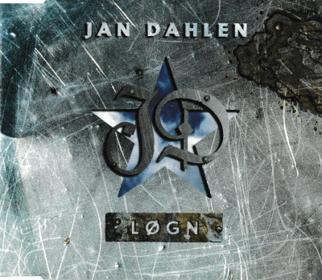
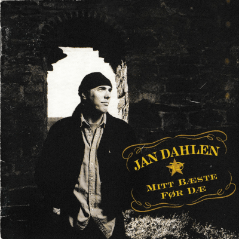
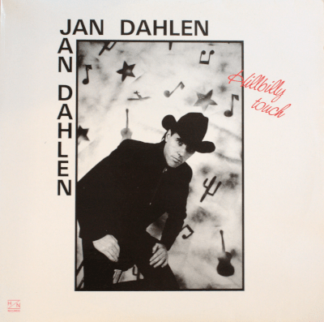
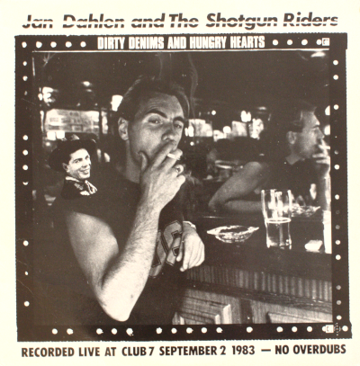

Utgivelser
Drømmer og virkelighet (2023)

- Så godt
- Hør min sang
- Kor går vi no
- På en hjemløs dag
- Perspektiv
- Årsak og virkning
- Flukt
- Takk min venn
- Gammel mann
- Natta go natta
- Livets bok
Kæm e du (2018)

- Minnans spor
- Du betyr ingenting
- Kæm e du
- Flyskrækk
- Søndagsblues
- Min babe
- Minnan
- Kåffer
- Prøve å ikkje tænk på dæ
- Sa æ ja
- Vuggevise
love and affection (2006)
- Words of Farewell
- My Progeny
- A Man's Blues
- Shotgun Rider
- Only Dreaming
- Without You
- St. James' Park
- Touring
- The Plot of My Life
- Single in the Rain
- Perhaps
Løgn (1999)

- Løgn
- En kvinne som deg
- Under fjord'n i bil
Mitt bæste før dæ (1993)
- Mitt bæste før dæ
- Little Willie John
- Tebake dit du kom fra
- Johnny Barberbla
- Ho drikk alein
- Førtapt no igjæn
- Det e over
- Djæveln's datter
- Mønstra på livstid
- Gjænforeningen
- Eit offer
Hillbilly touch (1988)

- Inspiration
- All Alone (and Happy Together)
- Victim of Life's Circumstances
- Let there be love
- New York City
- Blue is the Color
- Wish You Were Mine
- Love Story
- Yesterday's Wine
- Honky Tonk Masquerade
Dirty Denims and Hungry Hearts (1983)
- Shotgun Rider
- Life is a party
- Tennessee Whiskey
- Pick up truck
- Too drunk to remember
- Part time love
- Cowboy Peyton Place
- The return of the grievous angel
- Song for the life
- Country music and big city life
- A fool such as I
- Mamma's don't let your babies grow up to be cowboys
- Truck-driving man